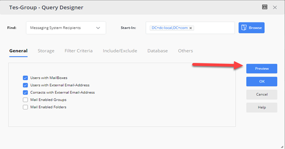
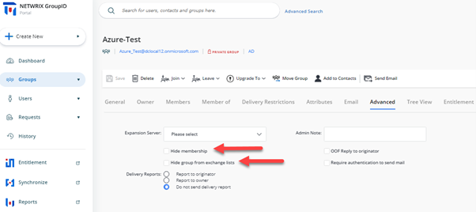
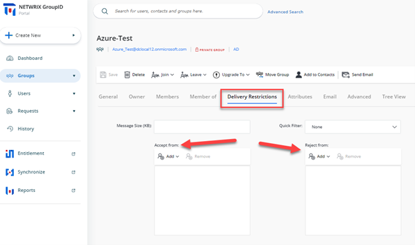

Applies To:
GroupID 10 or above
Business Scenario:
Our objective is to establish and enforce best practices to prevent external and internal data breaches while using GroupID, ensuring the security and confidentiality of sensitive information.
Best Practices:
Following are some of the Best Practices to avoid any kind of external/internal Data breaches while using GroupID.
Using Security Roles to Limit Scope of Search
GroupID uses RBAC model through which you can define Security Roles and can delegate permissions accordingly to different users. We can set GroupID search in such a way that AD objects (e.g., Groups, Users, Contacts) can only be searched within a specific OU and filtered based on Active Directory attributes.
For more information on how to setup a limit on the search scope for a particular Security Role, visit the following KB Article:
Walkthrough Search Policy - Define Scope and Filter Results.
Using Security Roles to Specify Specific Area Where Groups Can be Created or Have a Fixed and Hidden Path.
In GroupID, you can apply policies to security roles, so that role members can use GroupID in keeping with the policy restrictions. GroupID’s New Object policy enables you to restrict role members to create new groups in a specific OU only.
For more information on how to setup a New Object policy for specific security roles, visit the following KB Article.
Importing Membership via GroupID Bulk Membership Import Feature for Groups
Many times, organizations create groups (Security and Distributions) in advance i.e., before the actual usage of groups. To avoid any critical information being leaked out, it is recommended that such groups be created without populating membership upon its creation.
Instead, you can use the Bulk Import Membership feature of GroupID to update groups with the correct memberships just before their actual usage starts. Bulk import allows for external source files like a CSV or an Excel Sheet to import membership when it is needed.
In GroupID, bulk import of memberships is possible using the Import Wizard available in GroupID Portal. Following KB Article provides step-by-step instructions to bulk import members in a group.
How To Import Members to a Group Using Self-Service Import Wizard.
Creating Smart Group Without Updating Memberships
Another way to ensure that the group memberships do not update beforehand, if a group has been created in advance, is by just previewing the query results of a Smart group without updating the group memberships.
A query based dynamic "smart group" is one whose membership is determined by the supplied criteria. The results can be previewed but not acted upon until needed. Keeping out of update schedule ensures only when manually updated that membership is updated.

Keep Group Hidden from GAL Until it is Ready to be Used
Keeping a group and its membership hidden from discoverability from external tools like Outlook can also help comply to organizational policies for ensuring secrecy.
Using GroupID Portal, if a mail-enabled group is created, we can hide the Group and its membership from Address Book and GAL in the following way.

Selecting Appropriate Security Type for Groups
During the creation of a group via GroupID Portal, the security type can be designated as Private, Semi-Private, or Public. This classification, serving as a pseudo attribute within GroupID, governs the permission levels for joining the group. It is always recommended to choose Private as the Security Type for Sensitive Groups.
-
Private – A closed group where the group owner solely determines group membership.
-
Semi-Private – The group owner approves users' requests to join or leave the group.
-
Public – An open group that anyone can join or leave.
Setting up Delivery Restrictions on Mail-Enabled Groups
It is always recommended to ensure/limit the inflow of Email Messages received by the critical groups with the production environment. GroupID allows you to set Delivery Restrictions on such groups by leveraging the AuthOrig and UnAuthOrig attributes from Active Directory. Both Self-Service and Automate give Group Owners and Administrators the ability to set rules for Accepting/Rejecting Emails from certain users for a particular group.
To set Delivery Restrictions via GroupID portal, simply search for the Group and navigate to Delivery Restriction tab in Group Properties.

Setting up Approver Workflows for the Creation of New Groups
One of the most efficient methods to effectively manage the number/quality of groups being created by end users is the implementation of a continuous monitoring process where Admins can approve the group being created.
GroupID allows you to setup customized workflow approval processes with tailored filters to cater to use case specific triggering. This process ensures that whenever a group is created an approval request is sent to concerned Authorities for approval.
For more information of implementing such workflows, visit the following KB Article.
Setting up Message Moderators for Mail-Enabled Groups
Another way to ensure that no unauthorized message is sent to critical groups, administrators can setup moderator approval processes for Microsoft Exchange. GroupID can be easily customized to provide the necessary attributes in the Group Properties visible on the portal to initiate a Message Approval process and assign moderators for certain critical DLs.
For more information on customization to the portal, visit the following KB Article.
How To Add Message Approvers in Group Properties in Self-Service.
Other Best Practices to Improve Compliance.
In addition to the above-mentioned best practices for making sure the production environment is secure and comply to the company policy, visit the following KB Article to know about the best practices for controlling changes to group memberships after creation.